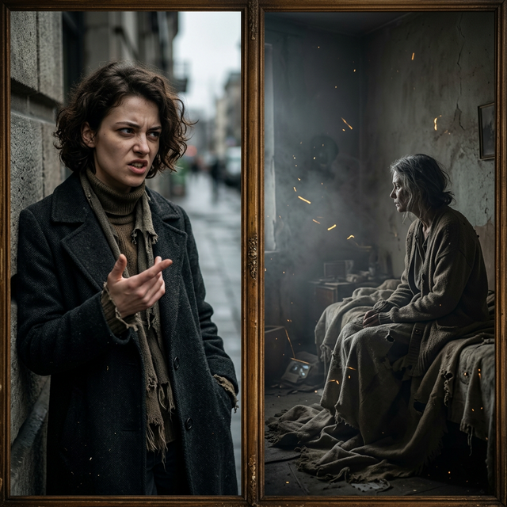
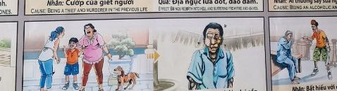

La Mirada del Desprecio The Gaze of Contempt Lo sguardo del disprezzo 蔑视的眼神 نظرة الازدراء Взгляд презрения Der Blick der Verachtung Le regard du mépris 軽蔑の視線 O olhar do desprezo
Al despreciar el valor ajeno, pierdes tu salud espiritual. By despising the value of others, you lose your spiritual health. Disprezzando il valore degli altri, perdi la tua salute spirituale. 轻视他人的价值，你就会失去精神健康。 باحتقارك لقيمة الآخرين تفقد صحتك الروحية. Презирая ценность других, вы теряете свое духовное здоровье. Indem Sie den Wert anderer verachten, verlieren Sie Ihre geistige Gesundheit. En méprisant la valeur des autres, vous perdez votre santé spirituelle. 他人の価値を軽蔑すると、あなたは霊的な健康を失います。 Ao desprezar o valor dos outros, você perde sua saúde espiritual.
Mirar a los vulnerables como si fueran basura es un acto de soberbia que envenena la propia salud física y mental. Es ignorar que todos formamos parte de la misma red de vida.
Looking at the vulnerable as if they were trash is an act of pride that poisons both physical and mental health. It is ignoring that we all belong to the same network of life.
El efecto es la enfermedad crónica y el aislamiento. El dolor físico se convierte en el maestro que obliga al soberbio a depender de la compasión que él negó a otros.
The effect is chronic illness and isolation. Physical pain becomes the teacher that forces the proud person to depend on the compassion they denied to others.
El Espejo Roto
The Broken Mirror
Lo specchio rotto
破碎的镜子
المرآة المكسورة
Разбитое зеркало
Der zerbrochene Spiegel
Le miroir brisé
壊れた鏡
O espelho quebrado
Cierta persona caminaba siempre mirando por encima del hombro, con la nariz en alto, tratando a los menos afortunados como si fueran basuras molestas. Creía en su propia perfección, incapaz de notar el dolor en los ojos de quienes humillaba...
Pero en el inmenso tapiz de Dios, todos somos hilos de la misma tela. Lastimar la existencia del otro es despreciarnos a nosotros mismos. Y así, el universo le llevó a una cama fría, atado a una enfermedad que lo desfiguraba y alejaba a todos a su alrededor.
Se convirtió en el ser rechazado que él mismo despreciaba. Sus gritos por una simple caricia humana le rasgó por fin el velo de la soberbia. Comprendió el profundo valor de sentirse igual y hermanos. Al sollozar en su dolorosa soledad, nació la verdadera humildad... que lo haría invencible en el amor verdadero.
A certain person walked around always looking over his shoulder, with his nose in the air, treating the less fortunate as if they were annoying trash. He believed in his own perfection, unable to notice the pain in the eyes of those he humiliated...
But in God's immense tapestry, we are all threads of the same fabric. To hurt the existence of another is to despise ourselves. And so, the universe took him to a cold bed, bound by an illness that disfigured him and alienated everyone around him.
He became the rejected being that he himself despised. His cries for a simple human caress finally tore the veil of pride. He understood the deep value of feeling equal and brothers. As he sobbed in his painful loneliness, true humility was born... that would make him invincible in true love.
Una certa persona andava in giro guardandosi sempre alle spalle, con il naso per aria, trattando i meno fortunati come se fossero fastidiosi rifiuti. Credeva nella propria perfezione, incapace di notare il dolore negli occhi di coloro che umiliava...
Ma nell'immenso arazzo di Dio, siamo tutti fili dello stesso tessuto. Danneggiare l’esistenza di un altro significa disprezzare noi stessi. E così, l'universo lo portò in un letto freddo, legato da una malattia che lo sfigurava e alienava tutti coloro che lo circondavano.
Divenne l'essere rifiutato che lui stesso disprezzava. Le sue grida per una semplice carezza umana squarciarono finalmente il velo dell'orgoglio. Capì il valore profondo di sentirsi uguali e fratelli. Mentre singhiozzava nella sua dolorosa solitudine, nacque la vera umiltà... che lo avrebbe reso invincibile nel vero amore.
有一个人走来走去，总是高高在上，把那些不幸的人当作讨厌的垃圾。他相信自己的完美，却无法注意到那些被他羞辱的人眼中的痛苦……
但在上帝巨大的织锦中，我们都是同一织物的线。伤害他人的存在就是蔑视我们自己。于是，宇宙把他带到了一张冰冷的床上，被一种疾病所束缚，这种疾病毁了他的容貌，疏远了他周围的每个人。
他成了他自己所鄙视的被拒绝的人。他对简单的人类爱抚的呼喊最终撕开了骄傲的面纱。他理解平等和兄弟感的深刻价值。当他在痛苦的孤独中哭泣时，真正的谦卑诞生了……这将使他在真爱中所向无敌。
كان هناك شخص ما يتجول دائمًا وهو ينظر من فوق كتفه، وأنفه في الهواء، ويعامل الأشخاص الأقل حظًا كما لو كانوا قمامة مزعجة. كان يؤمن بكماله، غير قادر على ملاحظة الألم في عيون من أذلهم...
ولكن في نسيج الله الهائل، نحن جميعًا خيوط من نفس القماش. إن إيذاء وجود شخص آخر هو احتقار لأنفسنا. وهكذا أخذه الكون إلى سرير بارد، مقيدًا بمرض شوهه وأبعد كل من حوله.
لقد أصبح الكائن المرفوض الذي كان هو نفسه يحتقره. صرخاته من أجل عناق إنساني بسيط مزقت أخيرًا حجاب الكبرياء. لقد فهم القيمة العميقة للشعور بالمساواة والإخوة. وبينما كان يبكي من وحدته المؤلمة، ولد التواضع الحقيقي... الذي سيجعله لا يقهر في الحب الحقيقي.
Некий человек ходил вокруг, всегда оглядываясь через плечо и задрав нос, обращаясь с менее удачливыми, как с надоедливым мусором. Он верил в собственное совершенство, не в силах замечать боли в глазах тех, кого он унижал...
Но в огромном гобелене Бога мы все — нити одной ткани. Наносить вред существованию другого – значит презирать себя. И вот, вселенная забрала его в холодную постель, скованного болезнью, которая изуродовала его и оттолкнула всех вокруг.
Он стал отвергнутым существом, которое сам презирал. Его крики о простой человеческой ласке наконец разорвали завесу гордости. Он понимал глубокую ценность чувства равенства и братьев. Когда он рыдал в своем мучительном одиночестве, рождалось истинное смирение... которое сделало бы его непобедимым в настоящей любви.
Ein gewisser Mensch ging umher und schaute immer über die Schulter, die Nase in die Luft gereckt, und behandelte die weniger Glücklichen, als wären sie lästiger Müll. Er glaubte an seine eigene Perfektion und konnte den Schmerz in den Augen derer, die er demütigte, nicht bemerken ...
Aber in Gottes riesigem Wandteppich sind wir alle Fäden aus demselben Stoff. Die Existenz eines anderen zu verletzen bedeutet, uns selbst zu verachten. Und so brachte ihn das Universum in ein kaltes Bett, gefesselt von einer Krankheit, die ihn entstellte und alle um ihn herum entfremdete.
Er wurde zu dem abgelehnten Wesen, das er selbst verachtete. Seine Schreie nach einer einfachen menschlichen Liebkosung zerrissen schließlich den Schleier des Stolzes. Er verstand, wie wichtig es ist, sich gleichberechtigt und brüderlich zu fühlen. Als er in seiner schmerzhaften Einsamkeit schluchzte, wurde wahre Demut geboren ... die ihn in wahrer Liebe unbesiegbar machen würde.
Une certaine personne se promenait toujours en regardant par-dessus son épaule, le nez en l'air, traitant les plus démunis comme s'ils étaient des détritus ennuyeux. Il croyait en sa propre perfection, incapable de remarquer la douleur dans les yeux de ceux qu'il humiliait...
Mais dans l’immense tapisserie de Dieu, nous sommes tous les fils d’un même tissu. Blesser l’existence d’autrui, c’est se mépriser soi-même. Et ainsi, l’univers l’a emmené dans un lit froid, lié par une maladie qui l’a défiguré et a aliéné tout le monde autour de lui.
Il est devenu l’être rejeté qu’il méprisait lui-même. Ses cris pour une simple caresse humaine ont fini par déchirer le voile de la fierté. Il a compris la valeur profonde de se sentir égaux et frères. Alors qu'il sanglotait dans sa douloureuse solitude, la véritable humilité est née... qui le rendrait invincible dans le véritable amour.
ある人はいつも肩越しに鼻を上げて歩き回り、恵まれない人たちを迷惑なゴミのように扱っていました。彼は自分の完璧さを信じていたが、自分が辱めを与えた人々の目の痛みに気づくことができなかった...
しかし、神の巨大なタペストリーの中で、私たちは皆同じ布の糸です。他人の存在を傷つけることは、自分自身を軽蔑することです。そして、宇宙は彼を冷たいベッドに連れて行き、病気に縛られ、彼の外見を傷つけ、周囲の人々を疎外させました。
彼は自分自身が軽蔑する拒絶された存在となった。人間としての単純な愛撫を求める彼の叫びが、ついにプライドのベールを破った。彼は平等で兄弟であると感じることの深い価値を理解していました。辛い孤独の中ですすり泣くうちに、真の謙虚さが生まれ、それが彼を真実の愛においては無敵にするだろう。
Uma certa pessoa andava sempre olhando por cima do ombro, com o nariz empinado, tratando os menos afortunados como se fossem lixo chato. Ele acreditava na sua própria perfeição, incapaz de perceber a dor nos olhos daqueles que humilhava...
Mas na imensa tapeçaria de Deus somos todos fios do mesmo tecido. Ferir a existência do outro é desprezar a nós mesmos. E assim, o universo o levou para uma cama fria, preso por uma doença que o desfigurou e alienou todos ao seu redor.
Ele se tornou o ser rejeitado que ele mesmo desprezava. Seus gritos por uma simples carícia humana finalmente rasgaram o véu do orgulho. Ele entendeu o profundo valor de se sentir igual e irmão. Enquanto ele soluçava em sua dolorosa solidão, nasceu a verdadeira humildade... que o tornaria invencível no amor verdadeiro.
La Inspiración Original
The Original Inspiration
L'Ispirazione Originale
最初的灵感
الإلهام الأصلي
Оригинальное вдохновение
Die Ursprüngliche Inspiration
L'Inspiration Originale
元のインスピレーション
A Inspiração Original
La historia que hemos relatado en este capítulo está inspirada por el pasaje de la escena original de los murales «Tranh Nhân Quả» (Ilustraciones del Karma) del Templo Linh Ung en Da Nang, capturado en la imagen.
La storia che abbiamo raccontato in questo capitolo è ispirata al passaggio della scena originale dei murali “Tranh Nhân Quả” (Illustrazioni del Karma) del Tempio Linh Ung a Da Nang, catturati nell'immagine.
我们在本章中讲述的故事的灵感来自图像中捕获的岘港灵应寺“Tranh Nhân Quả”（业力插图）壁画的原始场景。
القصة التي رويناها في هذا الفصل مستوحاة من مقطع من المشهد الأصلي لجداريات "ترانه نهان كو" (الرسوم التوضيحية للكارما) لمعبد لينه أونغ في دا نانغ، الملتقطة في الصورة.
История, которую мы рассказали в этой главе, вдохновлена отрывком из оригинальной сцены фрески «Тран Нхан Ку» («Иллюстрации кармы») храма Линь Унг в Дананге, запечатленной на изображении.
Die Geschichte, die wir in diesem Kapitel erzählt haben, ist inspiriert von der Passage aus der Originalszene der Wandgemälde „Tranh Nhân Quả“ (Illustrationen von Karma) des Linh Ung-Tempels in Da Nang, die im Bild festgehalten ist.
L'histoire que nous avons racontée dans ce chapitre est inspirée du passage de la scène originale des peintures murales « Tranh Nhân Quả » (Illustrations du Karma) du temple Linh Ung à Da Nang, capturées dans l'image.
この章で私たちが語った物語は、ダナンのリンウン寺院の壁画「Tranh Nhân Quả」（カルマの図）の元のシーンの一節からインスピレーションを得て、画像に収められています。
A história que contamos neste capítulo é inspirada na passagem da cena original dos murais “Tranh Nhân Quả” (Ilustrações do Karma) do Templo Linh Ung em Da Nang, capturada na imagem.
The story we have related in this chapter is inspired by the passage from the original scene of the "Tranh Nhân Quả" (Karma Illustrations) murals at the Linh Ung Temple in Da Nang, captured in the image.

Como se puede apreciar en el pasaje extraído del mural, la causa y su efecto kármico están descritos originalmente en vietnamita y con una breve traducción al inglés. A continuación, te ofrecemos su traducción detallada en los distintos idiomas:
As can be seen in the passage extracted from the mural, the cause and its karmic effect are originally described in Vietnamese with a brief English translation. Below, we offer the detailed translation in different languages:
Come si può vedere nel passaggio estratto dal murale, la causa e il suo effetto karmico sono originariamente descritti in vietnamita con una breve traduzione in inglese. Di seguito offriamo la traduzione dettagliata in diverse lingue:
正如壁画所见，原因及其业报原本用越南语描述并配有简短英文翻译。以下是各种语言的详细翻译：
كما يمكن رؤيته في المقطع المقتبس من اللوحة الجدارية، فإن السبب وتأثيره الكارمي موصوفان في الأصل باللغة الفيتنامية مع ترجمة إنجليزية موجزة. نقدم أدناه الترجمة التفصيلية بلغات مختلفة:
Как видно из отрывка, взятого из фрески, причина и кармический эффект изначально описаны на вьетнамском языке с кратким английским переводом. Ниже мы предлагаем подробный перевод на разные языки:
Wie in der aus dem Wandgemälde entnommenen Passage zu sehen ist, werden die Ursache und ihre karmische Wirkung ursprünglich auf Vietnamesisch mit einer kurzen englischen Übersetzung beschrieben. Nachfolgend bieten wir die detaillierte Übersetzung in verschiedenen Sprachen an:
Comme on peut le voir dans le passage extrait de la fresque, la cause et son effet karmique sont décrits à l'origine en vietnamien avec une brève traduction en anglais. Ci-dessous, nous proposons la traduction détaillée dans différentes langues :
壁画から抽出された一節に見られるように、原因とそのカルマ的影響は元々ベトナム語で説明されており、短い英訳が添えられています。以下に、さまざまな言語での詳細な翻訳を示します。
Como pode ser visto na passagem extraída do mural, a causa e seu efeito cármico são originalmente descritos em vietnamita com uma breve tradução para o inglês. Abaixo, oferecemos a tradução detalhada em diferentes idiomas:
🇻🇳 Tiếng Việt:
Nguyên nhân: Nhìn người khác với ánh mắt khinh thường. | Tác dụng: Mang đến bệnh tật trầm trọng và sự cô đơn.
Traducción Recreada:
Causa: Mirar a los demás con desprecio.
Efecto: Trae enfermedades graves y soledad.
Recreated Translation:
Cause: Looking down on others.
Effect: Brings severe disease and loneliness.
Traduzione ricreata:
Causa: guardare gli altri con disprezzo.
Effetto: porta malattie gravi e solitudine.
重新翻译：
原因：蔑视他人。
结果：带来严重的疾病和孤独。
الترجمة المعاد صياغتها:
السبب: النظر إلى الآخرين بازدراء.
التأثير: يجلب أمراضًا خطيرة والوحدة.
Воссозданный перевод:
Причина: смотреть на других с презрением.
Следствие: приносит серьезные болезни и одиночество.
Nachgebildete Übersetzung:
Ursache: Andere mit Verachtung betrachten.
Wirkung: Bringt schwere Krankheiten und Einsamkeit mit sich.
Traduction recréée :
Cause : regarder les autres avec mépris.
Effet : entraîne des maladies graves et la solitude.
再作成された翻訳:
原因: 他人を軽蔑の目で見る。
結果: 深刻な病気と孤独をもたらす。
Tradução recriada:
Causa: Olhar para os outros com desprezo.
Efeito: Traz doenças graves e solidão.
Análisis: La mirada de desprecio y la burla hacia el infortunio ajeno corrompen nuestro ser interior, manifestándose tarde o temprano en enfermedades severas y repulsión social prolongada.
Analysis: The look of contempt and mockery towards the misfortune of others corrupts our inner being, manifesting sooner or later in severe illnesses and prolonged social repulsion.
Analisi: Lo sguardo di disprezzo e di scherno verso la sfortuna degli altri corrompe il nostro essere interiore, manifestandosi prima o poi in gravi malattie e in una prolungata repulsione sociale.
分析：对他人不幸遭遇的蔑视和嘲笑会腐蚀我们的内心，迟早会导致严重的疾病和长期的社会排斥。
التحليل: إن نظرة الازدراء والسخرية تجاه مصائب الآخرين تفسد كياننا الداخلي، وتتجلى عاجلاً أم آجلاً في أمراض خطيرة ونفور اجتماعي طويل الأمد.
Анализ: Взгляд презрения и насмешки по отношению к несчастьям других развращает наше внутреннее существо, проявляясь рано или поздно в тяжелых заболеваниях и длительном социальном отторжении.
Analyse: Der verächtliche und spöttische Blick auf das Unglück anderer verdirbt unser inneres Wesen und äußert sich früher oder später in schweren Krankheiten und anhaltender sozialer Abneigung.
Analyse : Le regard de mépris et de moquerie envers le malheur des autres corrompt notre être intérieur, se manifestant tôt ou tard par des maladies graves et une répulsion sociale prolongée.
分析: 他人の不幸に対する軽蔑や嘲笑の視線は私たちの内面を腐敗させ、遅かれ早かれ重篤な病気や長期にわたる社会的嫌悪として現れます。
Análise: O olhar de desprezo e zombaria diante do infortúnio alheio corrompe nosso ser interior, manifestando-se mais cedo ou mais tarde em doenças graves e repulsa social prolongada.
Si quieres conocer más sobre el proyecto o colaborar, accede a nuestro Linktree.
If you want to know more about the project or collaborate, access our Linktree.
Se vuoi saperne di più sul progetto o collaborare, accedi al nostro Linktree.
如果您想了解有关该项目或合作的更多信息，请访问我们的 Linktree.
إذا كنت تريد معرفة المزيد عن المشروع أو التعاون، قم بالوصول إلى موقعنا Linktree.
Если вы хотите узнать больше о проекте или сотрудничать, посетите наш Linktree.
Wenn Sie mehr über das Projekt erfahren oder zusammenarbeiten möchten, greifen Sie auf unsere zu Linktree.
Si vous souhaitez en savoir plus sur le projet ou collaborer, accédez à notre Linktree.
プロジェクトについて詳しく知りたい場合、またはコラボレーションしたい場合は、こちらにアクセスしてください。 Linktree.
Se quiser saber mais sobre o projeto ou colaborar, acesse nosso Linktree.